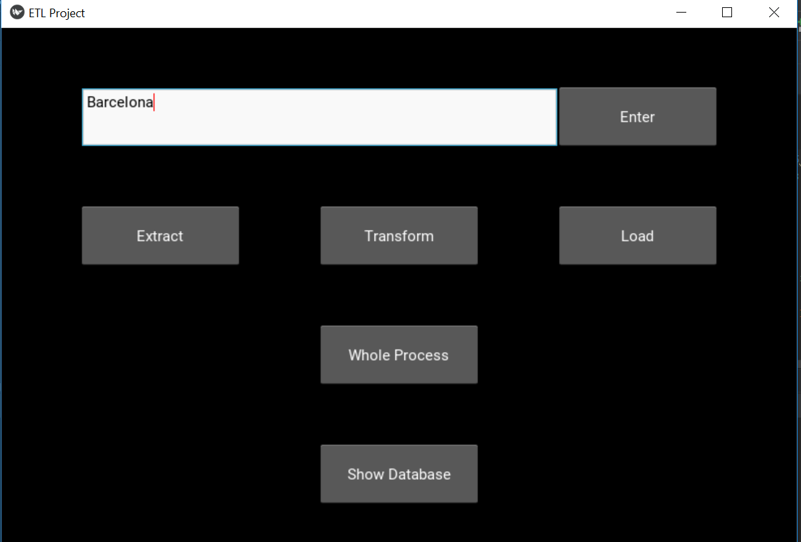
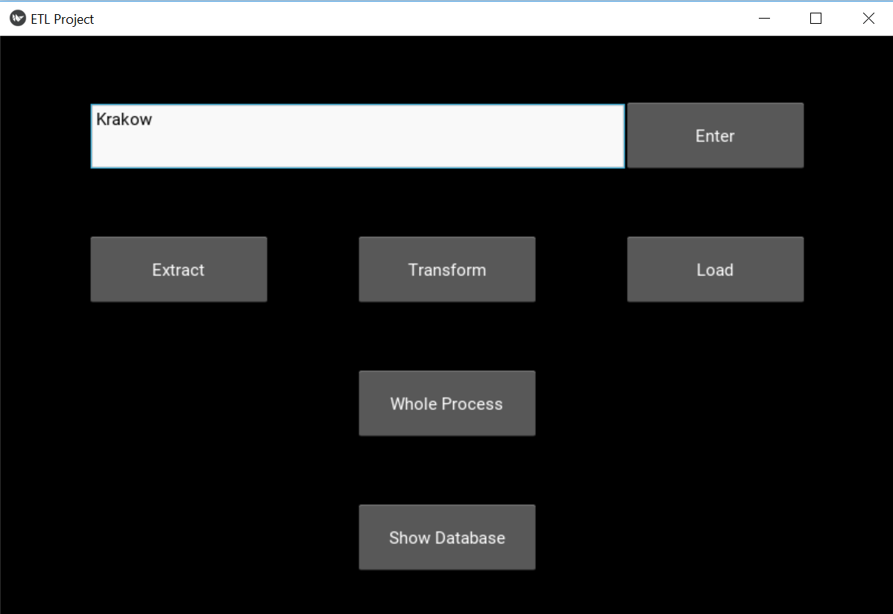
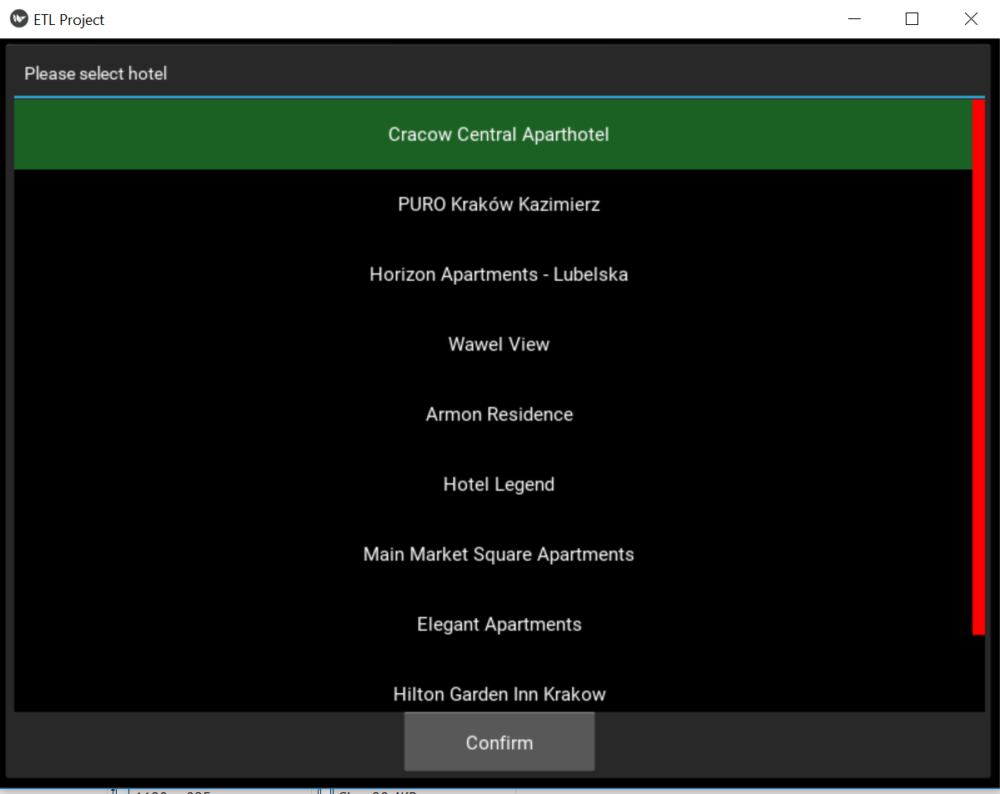
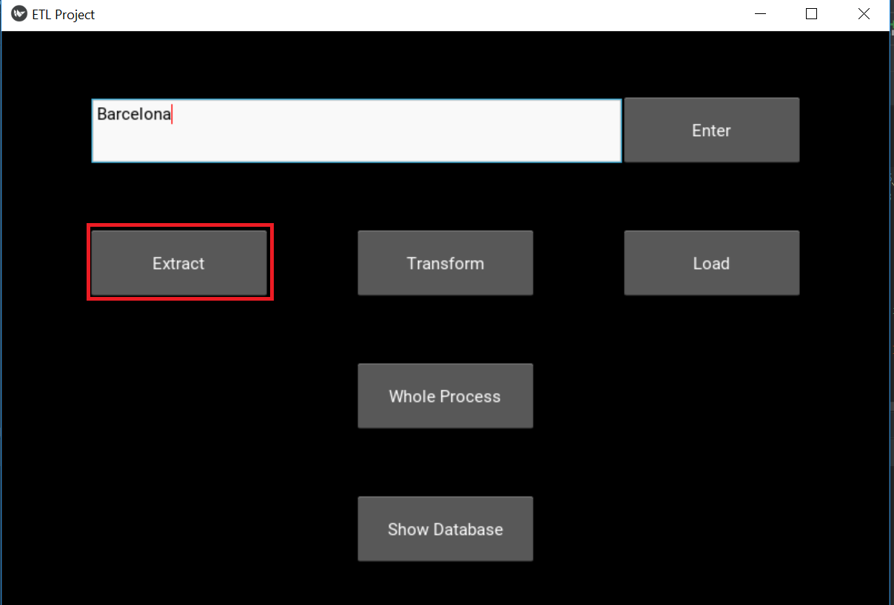
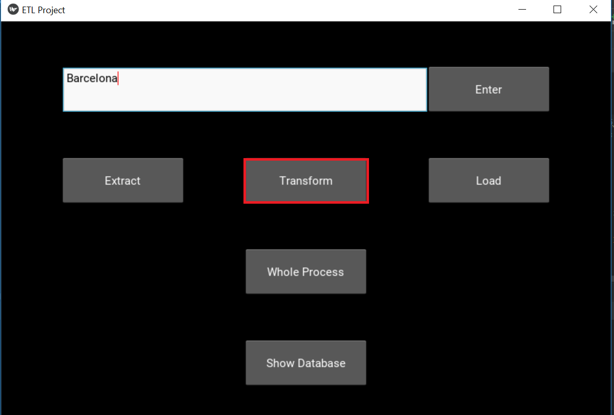
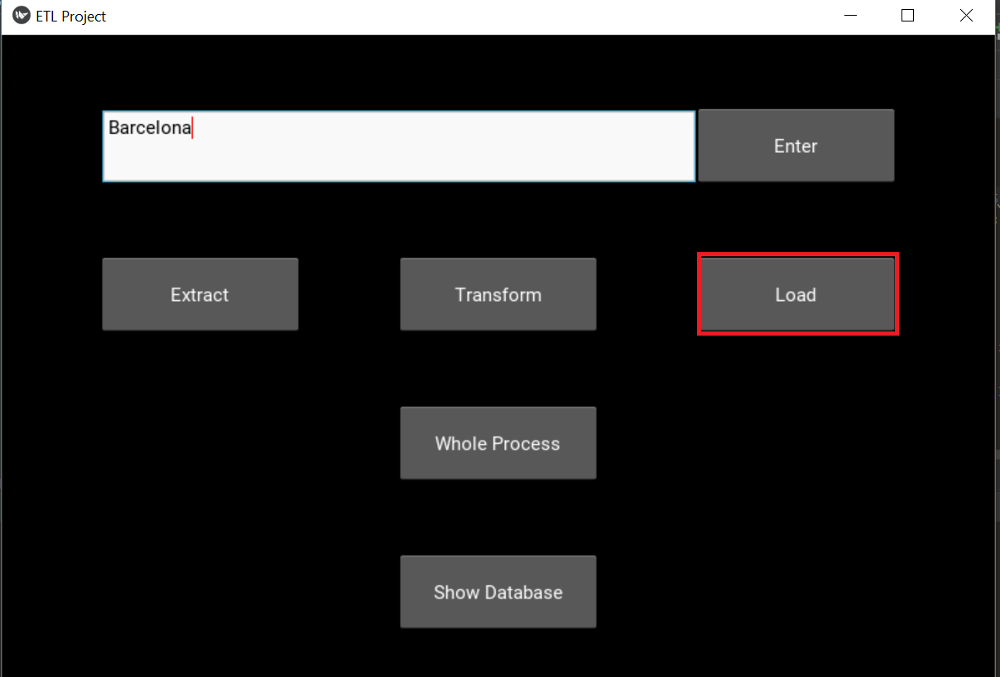
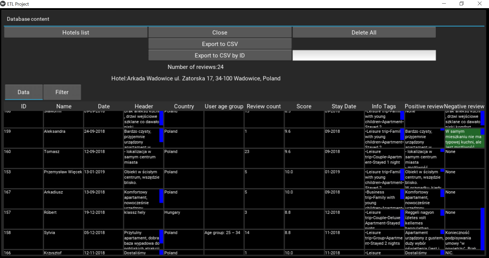
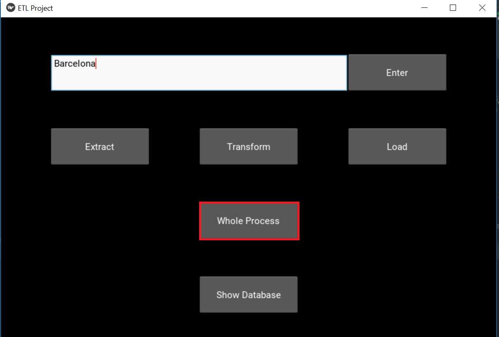

User Manual¶
ETL Project application collecting all user reviews from given hotel. Hotels and reviews data are read from travel fare aggregator website Booking.com (https://www.booking.com). Collected Data are stored into MySql database and are displayed also in application.
Installation¶
Application requires Python environment in version 3.6+. Firefox 63.0+ web browser is also required, in case of malfunction (exceptions about lack of access to this binary), please add firefox.exe binary path to system PATH. Application require additional python packages listed in appendix.
Python script dependecy_installer.py installs automatically all necessary packages.
Installing mysql is required, and “root” named user with password “root” must be present.
How to start application¶
Application is started as Python application by following command:
<path to>\python.exe <path to etl>etl.py
In result such main window shall appear:
Features description¶
- Application is combined from following features:
- Hotel choosing dialog
- Extraction
- Transform
- Load
- Presentation and filtering dialog
Hotel choosing dialog¶
This dialog gives possibility of choice hotel form 10 hotels in given city.
Extraction¶
Extraction functionality analyse web site content and collects all hotel and review information as XMLS. Selenium web driver as a driver engine and Beautiful soup as XML parser are use.
Requires that hotel is defined in Hotel choosing dialog.
Transform¶
- Transform functionality receives data from extraction module (in XML form)
- and transforming them info format acceptable by load module (Pony ORM format).
Requires data from Extract.
Load¶
Load functionality is dedicated for load data into database. In general all operations on database are implemented in this module.
This functionality is implemented by usage Pony Object Relation Mapper (ORM).
Requires data from Transform.
Presentation and filtering dialog¶
- This dialog contains following features:
- shows data from database for given hotel
- choice hotel and expose them data
- delete all reviews from database (for given hotel)
- export data to CSV file, all reviews for given hotel, or only one review
- filtering data in exposed table, as a pattern can be use also string with wildcard (%).
Use scenarios description¶
For just collecting data from web two possible scenarios are possible:
ETL process divided by separated actions.

- Choose city.

- Choice hotel.

- Extract reviews from hotel.

- Transform data.

- Load into database.

- Expose data.
one ETL process as one action.
- Choose city.

- Click Whole process button
- Expose data.